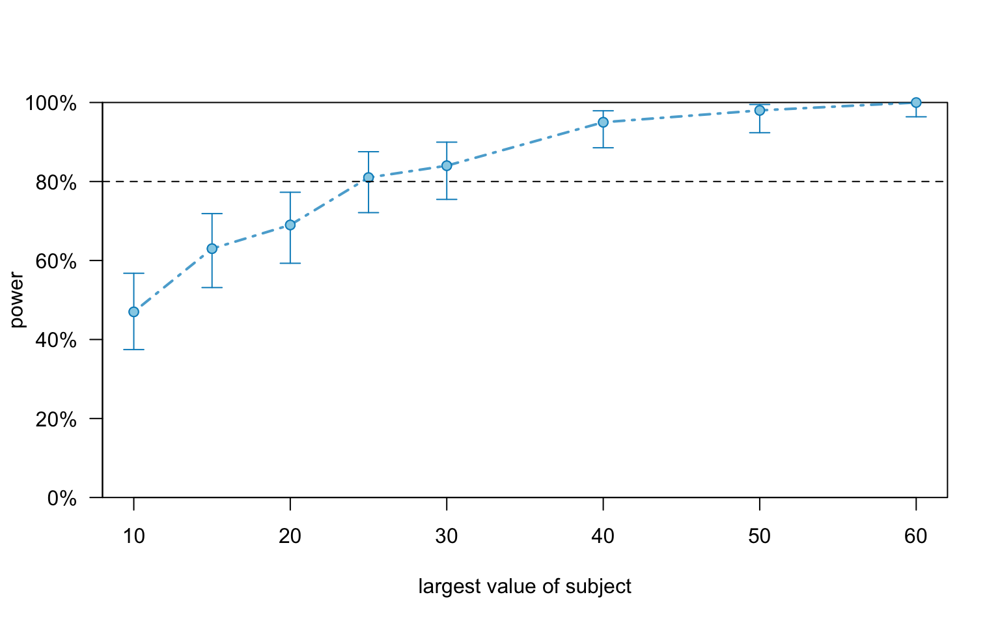
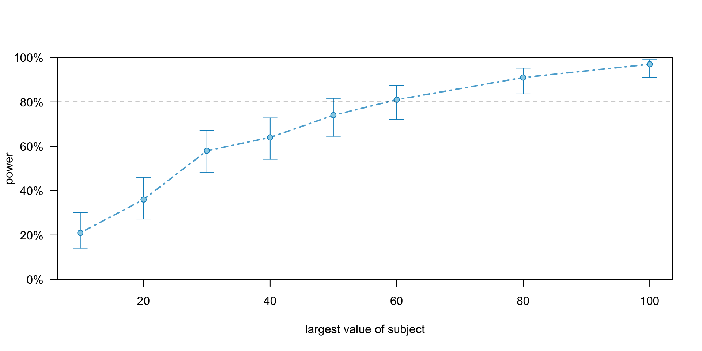

Power Analysis for Mixed-Effects Models
simr is an R package specifically designed for power analysis of mixed-effects models fitted with lme4.
Key features:
exp2 <- read_csv("angele_et_al_2013_experiment_2.csv")
exp2$preview <- factor(exp2$preview, levels = c("correct", "repeated", "orthographic", "semantic", "unrelated"))
contrasts(exp2$preview) <- contr.treatment
model_treatment <- lmer(gzd_n1 ~ preview +
(1 | subject) +
(1 | item),
data = exp2)
summary(model_treatment)Linear mixed model fit by REML. t-tests use Satterthwaite's method [
lmerModLmerTest]
Formula: gzd_n1 ~ preview + (1 | subject) + (1 | item)
Data: exp2
REML criterion at convergence: 42572.6
Scaled residuals:
Min 1Q Median 3Q Max
-2.2323 -0.6169 -0.2144 0.3781 6.3841
Random effects:
Groups Name Variance Std.Dev.
item (Intercept) 381.7 19.54
subject (Intercept) 835.6 28.91
Residual 6894.9 83.04
Number of obs: 3630, groups: item, 119; subject, 40
Fixed effects:
Estimate Std. Error df t value Pr(>|t|)
(Intercept) 239.971 5.781 82.183 41.508 < 2e-16 ***
previewrepeated -12.328 4.352 3489.811 -2.833 0.00464 **
previeworthographic -9.666 4.332 3487.211 -2.231 0.02573 *
previewsemantic 1.024 4.349 3485.980 0.235 0.81389
previewunrelated 2.030 4.372 3484.820 0.464 0.64244
---
Signif. codes: 0 '***' 0.001 '**' 0.01 '*' 0.05 '.' 0.1 ' ' 1
Correlation of Fixed Effects:
(Intr) prvwrp prvwrt prvwsm
previewrptd -0.369
prvwrthgrph -0.371 0.494
previwsmntc -0.369 0.491 0.493
previwnrltd -0.367 0.488 0.491 0.488# use only identical and repeated preview conditions
simplified_exp2 <- subset(exp2, preview %in% c("correct", "repeated"))
simplified_exp2$preview <- factor(simplified_exp2$preview, levels = c("correct", "repeated"))
# Fit the model
model <- lmer(ffd_n1 ~ preview + (1 | subject) + (1 | item),
data = simplified_exp2)
summary(model)Linear mixed model fit by REML. t-tests use Satterthwaite's method [
lmerModLmerTest]
Formula: ffd_n1 ~ preview + (1 | subject) + (1 | item)
Data: simplified_exp2
REML criterion at convergence: 16386.7
Scaled residuals:
Min 1Q Median 3Q Max
-2.1528 -0.6402 -0.1668 0.4548 6.4085
Random effects:
Groups Name Variance Std.Dev.
item (Intercept) 266.5 16.32
subject (Intercept) 503.2 22.43
Residual 3648.7 60.40
Number of obs: 1472, groups: item, 119; subject, 40
Fixed effects:
Estimate Std. Error df t value Pr(>|t|)
(Intercept) 222.344 4.450 64.894 49.968 < 2e-16 ***
previewrepeated -8.743 3.173 1344.515 -2.755 0.00594 **
---
Signif. codes: 0 '***' 0.001 '**' 0.01 '*' 0.05 '.' 0.1 ' ' 1
Correlation of Fixed Effects:
(Intr)
previewrptd -0.349Type III Analysis of Variance Table with Satterthwaite's method
Sum Sq Mean Sq NumDF DenDF F value Pr(>F)
preview 27699 27699 1 1344.5 7.5915 0.005943 **
---
Signif. codes: 0 '***' 0.001 '**' 0.01 '*' 0.05 '.' 0.1 ' ' 1Power for predictor 'previewrepeated', (95% confidence interval):
97.00% (91.48, 99.38)
Test: t-test with Satterthwaite degrees of freedom (package lmerTest)
Effect size for previewrepeated is 10.
Based on 100 simulations, (0 warnings, 0 errors)
alpha = 0.05, nrow = 1796
Time elapsed: 0 h 0 m 5 spower_result_anova <- powerSim(model, test = fixed("preview", "anova"), nsim = 100, progress = FALSE)
power_result_anovaPower for predictor 'preview', (95% confidence interval):
94.00% (87.40, 97.77)
Test: Type-2 F-test with Satterthwaite degrees of freedom (package lmerTest)
Based on 100 simulations, (0 warnings, 0 errors)
alpha = 0.05, nrow = 1796
Time elapsed: 0 h 0 m 5 sThe output shows:

Power for predictor 'preview', (95% confidence interval),
by largest value of subject:
10: 47.00% (36.94, 57.24) - 438 rows
15: 63.00% (52.76, 72.44) - 659 rows
20: 69.00% (58.97, 77.87) - 881 rows
25: 81.00% (71.93, 88.16) - 1116 rows
30: 84.00% (75.32, 90.57) - 1346 rows
40: 95.00% (88.72, 98.36) - 1796 rows
50: 98.00% (92.96, 99.76) - 2234 rows
60: 100.0% (96.38, 100.0) - 2677 rows
Time elapsed: 0 h 0 m 33 s# Create a model with specific parameters
# subject random effects: intercept SD = 50, slope SD = 20, correlation = 0.2
# item random effects: intercept SD = 30
cov_matrix <- matrix(c(2500, 200, 200, 400), nrow = 2)
model_custom <- makeLmer(
fix_time ~ condition + (1 + condition | subject) + (1 | item),
fixef = c(250, 30), # Intercept, condition effect
VarCorr = list(
item = 900, # Item variance,
subject = cov_matrix # Subject variance-covariance
),
sigma = 80, # Residual SD
data = exp2
)
summary(model_custom)Linear mixed model fit by REML ['lmerMod']
Formula: fix_time ~ condition + (1 + condition | subject) + (1 | item)
Data: exp2
REML criterion at convergence: 77107.6
Scaled residuals:
Min 1Q Median 3Q Max
-18.6759 -3.8696 0.0862 3.5875 21.4276
Random effects:
Groups Name Variance Std.Dev. Corr
item (Intercept) 900 30
subject (Intercept) 2500 50
condition 400 20 0.20
Residual 6400 80
Number of obs: 4482, groups: item, 119; subject, 40
Fixed effects:
Estimate Std. Error t value
(Intercept) 250.000 8.829 28.314
condition 30.000 3.274 9.163
Correlation of Fixed Effects:
(Intr)
condition 0.098 power_custom <- powerSim(model_custom,
test = fixed("condition", "t"),
nsim = 10, progress=FALSE)
power_customPower for predictor 'condition', (95% confidence interval):
100.0% (69.15, 100.0)
Test: t-test with Satterthwaite degrees of freedom (package lmerTest)
Effect size for condition is 30.
Based on 10 simulations, (2 warnings, 0 errors)
alpha = 0.05, nrow = 4482
Time elapsed: 0 h 0 m 4 s# Test different effect sizes
effect_sizes <- c(1, 2, 5, 10, 15, 20, 25)
power_by_effect <- sapply(effect_sizes, function(eff) {
model_temp <- model
fixef(model_temp)["previewrepeated"] <- eff
result <- powerSim(model_temp, test = fixed("previewrepeated", "t"), nsim = 50, progress = FALSE)
summary(result)$mean
})
data.frame(effect_size = effect_sizes, power = round(power_by_effect, 3)) effect_size power
1 1 0.06
2 2 0.04
3 5 0.44
4 10 0.90
5 15 1.00
6 20 1.00
7 25 1.00# Fit full model
model_full <- lmer(ffd_n1 ~ preview + (1 | subject) + (1 | item),
data = exp2)
fixef(model_full)["previewrepeated"] <- -10 # 10ms effect
fixef(model_full)["previewunrelated"] <- 5 # 5 ms effect
# power simulation
power_full_repeated <- powerSim(model_full, test = fixed("previewrepeated", "t"), nsim = 100, progress = FALSE)
power_full_repeatedPower for predictor 'previewrepeated', (95% confidence interval):
96.00% (90.07, 98.90)
Test: t-test with Satterthwaite degrees of freedom (package lmerTest)
Effect size for previewrepeated is -10.
Based on 100 simulations, (0 warnings, 0 errors)
alpha = 0.05, nrow = 4482
Time elapsed: 0 h 0 m 10 spower_full_unrelated <- powerSim(model_full, test = fixed("previewunrelated", "t"), nsim = 100, progress = FALSE)
power_full_unrelatedPower for predictor 'previewunrelated', (95% confidence interval):
44.00% (34.08, 54.28)
Test: t-test with Satterthwaite degrees of freedom (package lmerTest)
Effect size for previewunrelated is 5.0
Based on 100 simulations, (0 warnings, 0 errors)
alpha = 0.05, nrow = 4482
Time elapsed: 0 h 0 m 10 spower_anova_full <- powerSim(model_full, test = fixed("preview", "anova"), nsim = 100, progress = FALSE)
power_anova_fullPower for predictor 'preview', (95% confidence interval):
100.0% (96.38, 100.0)
Test: Type-2 F-test with Satterthwaite degrees of freedom (package lmerTest)
Based on 100 simulations, (0 warnings, 0 errors)
alpha = 0.05, nrow = 4482
Time elapsed: 0 h 0 m 11 s# Add another factor
exp2$pre_skip <- factor(exp2$pre_skip, levels = c("skipped", "not skipped"), labels = c("skipped", "not_skipped"))
model_interaction <- lmer(ffd_n1 ~ preview * pre_skip + (1 | subject) + (1 | item),
data = exp2)
fixef(model_interaction)["previewrepeated:pre_skipnot_skipped"] <- -15 # 15ms interaction effect
# power curve for interaction
extended_model_int <- extend(model_interaction, along = "subject", n = 100)
powerSim(model_interaction,
test = fixed("previewrepeated:pre_skipnot_skipped", "t"),
nsim = 100, progress = FALSE)Power for predictor 'previewrepeated:pre_skipnot_skipped', (95% confidence interval):
74.00% (64.27, 82.26)
Test: t-test with Satterthwaite degrees of freedom (package lmerTest)
Effect size for previewrepeated:pre_skipnot_skipped is -15.
Based on 100 simulations, (0 warnings, 0 errors)
alpha = 0.05, nrow = 4482
Time elapsed: 0 h 0 m 13 spower_curve_ext_int <- powerCurve(extended_model_int,
test = fixed("previewrepeated:pre_skipnot_skipped", "t"),
along = "subject",
breaks = c(10, 20, 30, 40, 50, 60, 80, 100),
nsim = 100,
progress = FALSE)
plot(power_curve_ext_int)
Day 3: Using simr